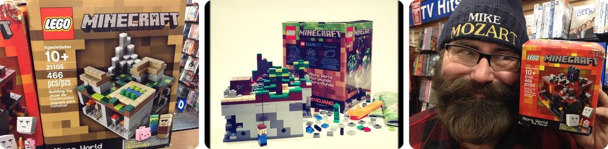
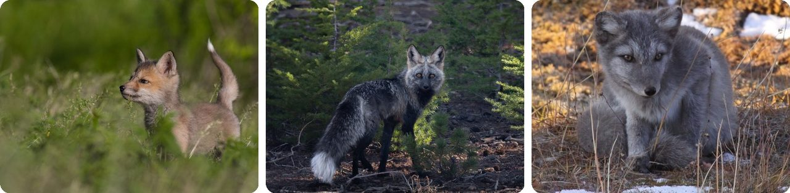

🌍 Top 10 LEGO Minecraft Sets, Mobs and Figures
Nov 21, 2026
1. 🗳️ LEGO Minecraft got voted in by fans in 2 days

Mojang, the company behind Minecraft, posted the idea on LEGO's fan-ideas website. There, a project needs 10,000 supporters before LEGO will even look at it. Minecraft fans got there in about 2 days.The first set, Micro World, came out in June 2012. It was four small chunks of a Minecraft world that snap together in any order, and some lift off to show caves with ore and an underground river. Its tiny characters are called micromobs.
By December 2012 it was sold out. Three more Micro Worlds followed: the Nether and the Village in 2013, and The End in 2014.
Basically, the fans voted a toy onto the shelves.
2. 🧱 LEGO Minecraft sets use plain bricks on purpose
 Starting in 2014, the sets switched to minifigure size. To stay as blocky as the game, they're built mostly from simple, ordinary bricks. Special molded pieces are saved for character heads, tools and a few body parts.
Starting in 2014, the sets switched to minifigure size. To stay as blocky as the game, they're built mostly from simple, ordinary bricks. Special molded pieces are saved for character heads, tools and a few body parts.
Each scene sits on a raised base, so you can push neighboring sets together and grow one bigger world. LEGO has now released about 177 sets and small bagged extras in this line.
Think of each box as one more chunk of a world you keep adding to.
3. 💥 The Creeper started out as a broken pig
 On August 20, 2009, Minecraft's creator Markus "Notch" Persson was making the pig. He accidentally swapped its length and height, and got a tall, skinny, four-legged thing instead.
On August 20, 2009, Minecraft's creator Markus "Notch" Persson was making the pig. He accidentally swapped its length and height, and got a tall, skinny, four-legged thing instead.
Rather than delete it, he said "I'll keep it for a creepy creature." He painted it green using the game's leaf texture and made it hostile. Now it sneaks up quietly, hisses, and explodes, blowing a hole in whatever you built.
In LEGO form, the Creeper's body and legs are mostly one single molded piece. And Minecraft's lead designer has said a monster that wrecks players' builds probably wouldn't get added to the game today.
In other words, a typo became the game's most famous monster.
4. 🐉 The Ender Dragon was in the first minifig-size LEGO Minecraft sets
 In late 2014, LEGO released its first six minifigure-size Minecraft sets, and The Ender Dragon was one of them.
In late 2014, LEGO released its first six minifigure-size Minecraft sets, and The Ender Dragon was one of them.
In the game, the dragon guards the main island of the End, a world of islands floating over a dark, bottomless void. Beat it, and the credits roll, followed by the End Poem: about 1,500 words by Irish writer Julian Gough that take around nine minutes to scroll past.
That's roughly as long as a five-page school essay.
So the reward for beating the final boss is a bedtime story.
5. 🧑 Steve's name started as a joke
 Notch called the default player "Steve" as a joke, because the name sounded so ordinary. Players picked it up, and it later became official. The character was never meant to be a boy or a girl, and Alex joined as a second default player in August 2014.
Notch called the default player "Steve" as a joke, because the name sounded so ordinary. Players picked it up, and it later became official. The character was never meant to be a boy or a girl, and Alex joined as a second default player in August 2014.
Then Steve went big. In 2020 he joined the fighting game Super Smash Bros. Ultimate, and he turned out so strong that by March 2023 several tournaments had banned him. In 2025, Jack Black played him in A Minecraft Movie.
A placeholder name ended up on a superstar.
6. 🗿 Only five LEGO Minecraft Bigfigs were ever made
 In 2019, LEGO launched Bigfigs: large brick-built figures of Minecraft characters, much bigger than a minifigure. Each one comes with a small sidekick mob.
In 2019, LEGO launched Bigfigs: large brick-built figures of Minecraft characters, much bigger than a minifigure. Each one comes with a small sidekick mob.
There are just five: Steve with a Parrot, Alex with a Chicken, a Skeleton with a Magma Cube, a Creeper with an Ocelot, and a Pig with a Baby Zombie. A third wave isn't likely.
You can count the whole collection on one hand.
7. 🦊 The LEGO Minecraft fox didn't get its own head until 2026

For years, LEGO built Minecraft foxes using a cat head piece. Fans noticed, and they weren't happy. LEGO design manager Joe Kyde said the team saw that disappointment.So at the EGX 2025 game show in London, LEGO revealed eight new sets with a brand-new fox head piece. They came out on January 1, 2026, in sets like Steve's Taiga Adventure and Chicken Farm.
Basically, the fox spent years wearing a cat costume.
8. 👻 Herobrine is a famous Minecraft villain who never existed
 In 2010, someone posted an anonymous story online. They said they saw a second Steve in their single-player world, with solid white eyes, staring at them through the fog before vanishing. Later, they said, their messages about it kept getting deleted.
In 2010, someone posted an anonymous story online. They said they saw a second Steve in their single-player world, with solid white eyes, staring at them through the fog before vanishing. Later, they said, their messages about it kept getting deleted.
It wasn't real, but it spread anyway. Livestreamers made their own versions, fans wrote stories and built mods to add him, and he even made a Guinness World Records poll of the best video game villains.
He's a campfire ghost story that made it into a record book.
9. 🐔 "Chicken jockey!" turned movie theaters into chaos
 In A Minecraft Movie (2025), Steve yells "Chicken jockey!" when a Minecraft mob shows up. Teen audiences in the US and UK started cheering, jumping, dancing and throwing popcorn at that exact moment.
In A Minecraft Movie (2025), Steve yells "Chicken jockey!" when a Minecraft mob shows up. Teen audiences in the US and UK started cheering, jumping, dancing and throwing popcorn at that exact moment.
It got wild. At one theater in Provo, Utah, viewers held up a live chicken and were kicked out. Some theaters put up warning signs about loud behavior.
Then Warner Bros. leaned in: on May 2, 2025, it released a "Block Party Edition" where fans were invited to sing and shout along. The movie earned about $961 million worldwide.
It turned a quiet movie theater into a football stadium.
10. 🦔 Fans tried to cancel Minecraft's Mob Vote and the armadillo still won
 Minecraft's Mob Vote let players pick one of three new creatures to add to the game. The 2023 choices were a crab, a penguin and an armadillo.
Minecraft's Mob Vote let players pick one of three new creatures to add to the game. The 2023 choices were a crab, a penguin and an armadillo.
Lots of players wanted all three. A petition asking Mojang to drop the vote got about 445,000 signatures in one week, roughly as many people as live in the city of Miami. Fans even made joke "revolution" posters.
The vote happened anyway, and the armadillo won. In September 2024, Mojang retired the Mob Vote for good.
Think of it as a class election where everyone demanded all three candidates win.
Fun fact
The Creeper's famous hiss was never meant to stay. Minecraft's composer, Daniel Rosenfeld (known as C418), made it as a placeholder matchstick sound with Notch, and it "seemed to work hilariously well." He built other sounds the same trial-and-error way: real footsteps on grass sounded wrong, so he lightly touched an old VHS tape instead, and the spider's screech is a fire hose recording pitched way up. Sound-effects artists have a whole bag of tricks like that.
Photo credits (Wikimedia Commons)
- #1: Minecraft Lego (flickr) by JeepersMedia, CC BY 2.0
- #1: Minecraft (flickr) by nefasth, CC BY-SA 2.0
- #1: Minecraft Lego (flickr) by JeepersMedia, CC BY 2.0
- #2: LEGO Minecraft set 21141 The zombie cave (flickr) by Alex does LEGO, CC0
- #2: Minecraft Lego (flickr) by JeepersMedia, CC BY 2.0
- #2: Diorama Minecraft en Lego (Colmar).jpg by Gzen92, CC BY-SA 4.0
- #3: lego creeper (flickr) by paulhome, CC BY 2.0
- #3: Minecraft Creeper Piñata (flickr) by taylor.a, CC BY 2.0
- #3: #minecraft creeper cakes for my boy's class. These are probably the worst looking cakes I've ever made, but they took so much work! (flickr) by mommyknows { Kim Becker }, CC BY 2.0
- #4: Minecraft Lego (flickr) by JeepersMedia, CC BY 2.0
- #4: Minecraft Lego (flickr) by JeepersMedia, CC BY 2.0
- #4: Zombie and Ender Dragon boys! (flickr) by mole555, CC BY 2.0
- #5: Minecraft Lego head (6790028921).jpg by Dennis Bohman from Boxholm, Sweden, CC BY 2.0
- #5: Minecraft Steve, Sandy Carnival, Sandy, Bedfordshire (flickr) by orangeaurochs, CC BY 2.0
- #5: Minecraft Steve (flickr) by colecamp, CC BY 2.0
- #6: Minecraft-Bigfigs-2019P1070601 (flickr) by Brickset, CC BY 2.0
- #6: Minecraft-Bigfigs-2019P1070469 (flickr) by Brickset, CC BY 2.0
- #6: Minecraft-Bigfigs-2019P1070488 (flickr) by Brickset, CC BY 2.0
- #7: Vulpes vulpes · Volgograd, RU by (c) Алина Урусова, some rights reserved (CC BY), CC BY
- #7: Vulpes vulpes necator · Deschutes County, US-OR, US by (c) David Willingham, some rights reserved (CC BY), CC BY
- #7: Vulpes lagopus · thule greenland by (c) Drew Avery, some rights reserved (CC BY), CC BY
- #8: Herobrine (Minecraft).png by OxyLight, CC BY 4.0
- #8: herobrine (flickr) by vegetta777 gaymer pro, CC BY-SA 2.0
- #8: Steve? 2.png by Xbox México, CC BY 3.0
- #9: Minecraft movie disruptive behavior warning.jpg by Chicken4War, CC BY-SA 4.0
- #9: Movie Ticket for A Minecraft Movie (2025).jpg by PublicDomainFan08, CC0
- #9: A Minecraft Movie McDonald's meal.jpg by YosemiteYamper, CC BY-SA 4.0
- #10: Nine-banded armadillo (13594).jpg by Rhododendrites, CC BY-SA 4.0
- #10: Dasypus novemcinctus · Recanto de Itaipuaçu, Maricá - RJ, Brasil by (c) Pedro Silva, some rights reserved (CC BY), CC BY
- #10: Six-banded armadillo (Euphractus sexcinctus).JPG by Charles J. Sharp, CC BY-SA 4.0
.jpg){kind=link}
.jpg){kind=link}
.png){kind=link}


.jpg){kind=link}

.jpg){kind=link}
.JPG){kind=link}